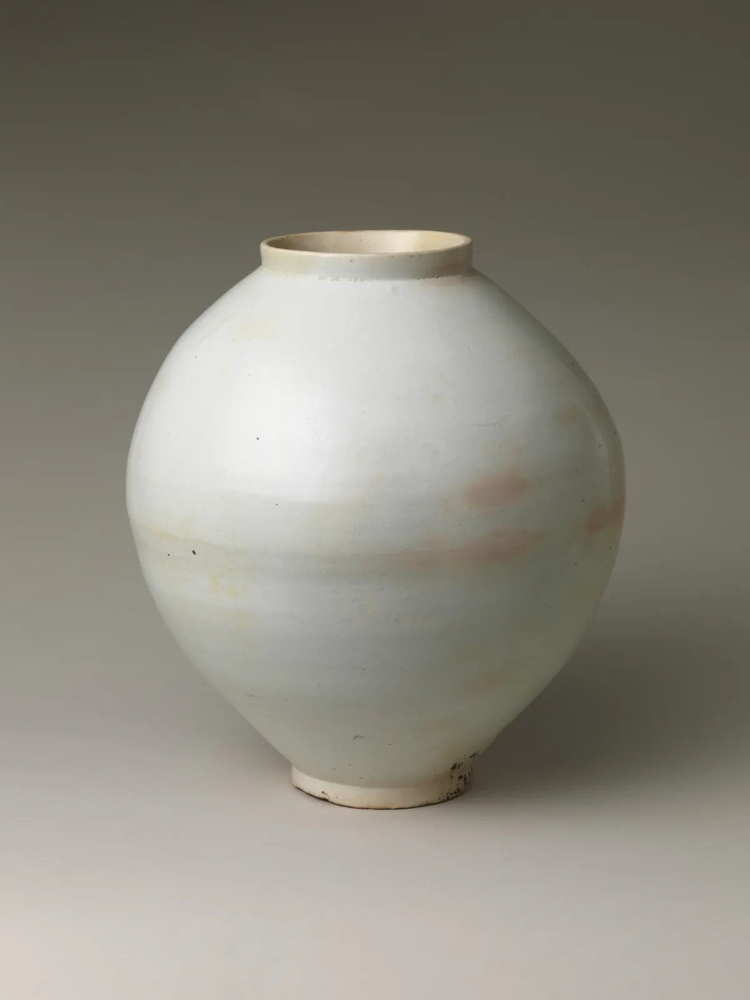
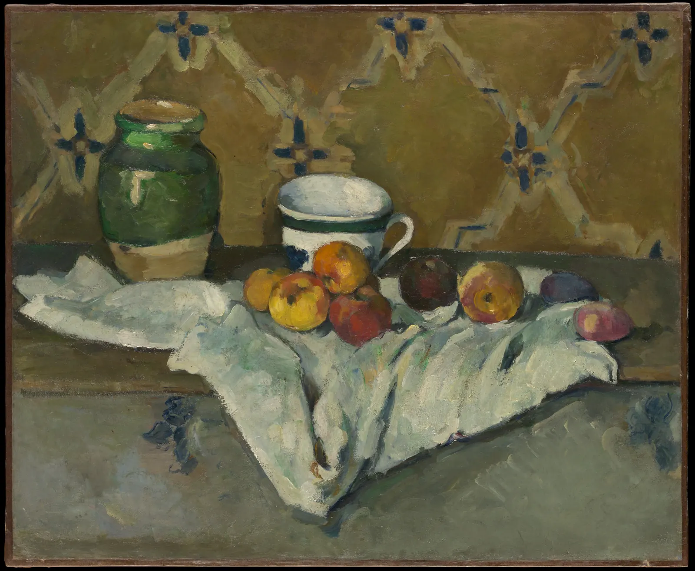

탁자 위의 컵을 그려 보라고 하면 많은 사람이 입구를 동그라미에 가깝게 그린다. 컵 입구가 동그랗다는 것을 알기 때문이다. 그런데 앉은 자리에서 실제로 보이는 입구는 위아래로 눌린 납작한 타원이고, 컵 바닥은 그보다 조금 더 둥근 타원이다. 원은 우리가 그리는 형태 가운데 가장 단순해 보이지만, 기울어지는 순간 가장 자주 틀리는 형태가 된다. 이 장은 원이 타원이 되는 규칙, 눈높이에 따라 타원의 폭이 바뀌는 이유, 바퀴와 간판처럼 세워진 원의 방향, 그리고 끝이 뾰족한 레몬 같은 흔한 실수를 하나씩 바로잡는다.
기운 원의 단축 ÷ 장축이 보는 각의 사인(sin)이라는 것을 알고, 타원을 각도로 부른다.
같은 원통에서도 눈높이에서 멀수록 타원이 둥글어지고, 눈높이에서는 직선이 된다는 것을 확인한다.
바퀴·간판처럼 세워진 원에서 타원의 단축이 회전축을 따른다는 규칙을 쓴다.
투시 속 정사각형에 원을 넣는 8점 작도를 하고, 원의 진짜 중심이 타원의 중심보다 뒤에 있다는 것을 본다.
뾰족한 끝, 납작한 바닥, 입구와 같은 폭의 바닥 같은 흔한 실수를 진단하고 고친다.
원이 기울면 타원이 된다
동전을 눈앞에 똑바로 세워 들면 동그랗다. 동전을 천천히 눕히면 위아래가 눌리기 시작해, 완전히 눕혀 눈높이에 두면 가는 선이 된다. 그 사이의 모든 모양이 타원(Ellipse)이다. 타원에서 가장 긴 지름을 장축(Major axis), 그와 직각인 가장 짧은 지름을 단축(Minor axis)이라고 한다. 기운 원에서 장축의 길이는 원의 지름 그대로이고, 줄어드는 것은 단축뿐이다.
아래 왼쪽은 옆에서 본 모습이다. 눈과 접시를 잇는 시선이 접시 면과 이루는 각을 보는 각(Viewing angle)이라고 부르자. 화면을 위아래로 끌어 보는 각을 바꿔 본다.
SIMULATOR
보는 각과 타원의 폭
위아래로 끌어 보는 각을 바꾼다
단축 ÷ 장축(그림에서 잰 값)—
sin α—
원의 중심 ↔ 타원의 중심—
해볼 것: ① α를 90°(바로 위에서 내려다보기)에서 0°(눈높이)까지 내린다. 장축은 그대로이고 단축만 줄어 마지막에는 선이 된다. ② α = 30°에서 두 수치를 비교한다. 단축 ÷ 장축이 sin 30° = 0.50과 거의 같다. 점선 타원(sin α로 계산)과 실제 투영이 겹친다. ③ "바짝 다가가 보기"로 바꾼다. 접시 지름의 두 배쯤 거리에서 보면 앞쪽 절반이 뒤쪽보다 조금 커지고, 원의 진짜 중심(점)이 타원의 중심(+)보다 위, 곧 뒤쪽으로 밀린다. sin α 규칙은 원이 눈에서 충분히 멀 때 잘 맞는 근사다. (핀홀 모형. 접시 지름 24 cm, 멀리서 보기는 2 m, 다가가 보기는 0.45 m 거리. 시선은 접시 중심을 향한다.)
눈이 원을 바로 위에서 보면(α = 90°) 원은 원으로, 비스듬히 보면 타원으로, 원의 평면과 같은 높이에서 보면 선으로 보인다. 단축이 줄어드는 비율은 보는 각만으로 정해진다.
$$\frac{\text{단축}}{\text{장축}} = \sin\alpha$$
\(\alpha\): 시선이 원의 평면과 이루는 각(보는 각). 원이 눈에서 원의 지름보다 충분히 멀 때 맞는 식이다(정사영 근사). α = 30°이면 0.50, 45°이면 0.71, 60°이면 0.87이다. 각이 작을 때는 조금만 바뀌어도 폭이 크게 달라지고, 90° 가까이에서는 거의 바뀌지 않는다.
그림 1. 타원을 각도로 부른다. 위: 타원의 장축과 단축. 기운 원에서 장축은 원의 지름과 같다. 아래: 보는 각 10°부터 90°까지의 타원과 그 단축 ÷ 장축. 디자이너와 일러스트레이터는 타원을 "30° 타원", "45° 타원"처럼 보는 각으로 부르고, 타원 자(템플릿)도 이 각도로 번호가 매겨져 있다.
타원을 각도로 부르면 좋은 점이 있다. "조금 납작하게"는 사람마다 다르지만 "30° 타원"은 누구에게나 같다. 그리고 각도는 눈과 물체의 자리에서 계산하거나, 실제로 보고 재어 정할 수 있다. 다음 절에서 그 각도가 어떻게 바뀌는지 본다.
눈높이에서 멀수록 둥글어진다
원통 모양의 물체에는 같은 크기의 원이 여러 높이로 쌓여 있다. 컵의 입구와 바닥, 기둥의 위아래, 화분의 테두리가 그렇다. 이 원들은 크기가 같아도 그림에서는 같은 타원이 아니다. 눈높이에 있는 원은 시선이 원의 평면을 스치므로(α = 0°) 선이 되고, 눈높이에서 아래로 멀어질수록 더 위에서 내려다보게 되어(α가 커져) 둥글어진다. 눈높이보다 위에 있는 원은 아래에서 올려다보므로 밑면이 보이는 타원이 된다. 4장에서 본 눈높이(수평선)가 여기서도 기준선이다.
아래 투명한 원통에는 30 cm마다 고리가 있다. 화면을 위아래로 끌어 눈높이를 옮겨 본다.
SIMULATOR
눈높이를 옮기면 타원의 폭이 바뀐다
위아래로 끌어 눈높이를 옮긴다
맨 위 고리—
가운데 고리—
맨 아래 고리—
해볼 것: ① 눈높이를 1.6 m(서서 본 높이)에 둔다. 1.5 m 고리가 거의 선이고, 아래로 갈수록 둥글어진다. 맨 아래 고리가 가장 둥글다. ② 눈높이를 0으로 내린다. 이번에는 모든 고리를 올려다보게 되어 위로 갈수록 둥글어진다. 고리의 아래쪽 곡선이 앞으로 나온다. ③ 거리를 8 m로 늘린다. 고리들의 폭 차이가 줄어 모두 비슷한 타원이 된다. 멀리 있는 원통일수록 위아래 타원이 비슷하고, 가까이 있는 원통일수록 차이가 크다. (핀홀 모형. 원통 지름 50 cm, 높이 2.4 m. 그림면은 세워 두었고(세로선은 나란함), 고리마다 그림에서 잰 단축 ÷ 장축을 보는 각으로 바꿔 적었다.)
원통 하나에서도 위아래 타원의 폭이 다르다는 것, 이것이 이 장에서 가장 중요한 관찰이다. 눈높이 아래에 놓인 컵이라면 바닥은 입구보다 언제나 조금 더 둥글다. 컵이 작고 멀리 있으면 그 차이가 작고, 크고 가까우면 차이가 크다. 그림을 보는 사람은 이 차이를 의식하지 못해도, 차이가 없거나 거꾸로 되면 물체가 앞으로 기울거나 떠 보인다고 느낀다.

그림 2. 작가 미상, 「백자 달항아리」, 조선 18세기 후반. 사진기는 입구보다 조금 높은 자리에 있다. 그래서 입구는 안쪽이 겨우 보이는 가는 타원이고, 사진기에서 더 아래에 있는 굽(바닥 받침)의 아랫선은 입구보다 훨씬 둥글게 아래로 휜다. 몸통의 둥근 윤곽도 눈에 보이지 않는 여러 단면 타원이 쌓인 결과다. 달항아리는 위아래 두 반구를 따로 빚어 이어 붙여 만든 것으로 알려져 있다. 그림을 그릴 때도 이 항아리를 입구·어깨·허리·굽의 단면 타원으로 나눠 보면 형태를 세우기 쉽다.메트로폴리탄 미술관 소장(The Harry G. C. Packard Collection of Asian Art, Gift of Harry G. C. Packard, and Purchase, Fletcher, Rogers, Harris Brisbane Dick, and Louis V. Bell Funds, Joseph Pulitzer Bequest, and The Annenberg Fund Inc. Gift, 1975), 백자. 공공 도메인(The Met Open Access, CC0). 소장처 작품 페이지 · 크레딧
종이컵 하나로 타원 표 만들기
종이컵 하나와 책 몇 권을 준비한다. 책상 앞에 앉아 종이컵을 팔 길이쯤 앞에 두고, 컵 아래에 책을 한 권씩 쌓아 컵을 눈높이 쪽으로 올리면서 입구와 바닥의 타원을 그린다. 책 0권, 2권, 4권, 그리고 눈높이와 같은 높이까지 네 번 그린다. 그릴 때마다 연필을 팔 길이로 뻗어 입구 타원의 장축과 단축 길이를 재고(2장의 연필 측정), 단축 ÷ 장축을 적는다. 다 그리면 네 그림을 나란히 놓고 ① 입구가 눈높이에 가까워질수록 납작해지는지, ② 언제나 바닥이 입구보다 둥근지, ③ 눈높이와 같은 높이에서 입구가 선이 되는지 확인한다. 같은 실험을 컵을 눈높이보다 높이(선반 위 등) 두고 해 보면 바닥 타원의 아랫면이 보이기 시작한다.
원통과 컵: 옆선은 타원의 끝에 닿는다
원통을 그릴 때는 위아래 두 타원을 먼저 정하고, 그 양 끝을 옆선으로 잇는다. 이때 옆선은 타원의 장축 끝, 곧 타원이 가장 넓어지는 지점에 닿는다. 옆선이 타원의 끝보다 안쪽이나 바깥쪽에서 출발하면 원통이 비틀리거나 모서리가 생긴 것처럼 보인다. 그리고 바닥 타원은 아래쪽 반만 보이고, 위쪽 반은 원통 몸통에 가려진다. 그래도 연습할 때는 보이지 않는 뒤쪽 반까지 연하게 그리는 것이 좋다. 타원 전체를 그려야 앞쪽 반의 곡선이 바르게 나오기 때문이다(7장에서 이것을 "투시해서 그리기"로 다시 본다).
그림 3. 컵에서 가장 흔한 세 가지 실수. 왼쪽: 입구를 두 곡선으로 그어 끝이 레몬처럼 뾰족하고, 바닥을 직선으로 그어 모서리가 생겼다. 가운데: 바닥 곡선이 위로 휘어 컵이 앞으로 넘어지는 것처럼 보인다. 눈높이 아래의 바닥은 아래로 휘어야 한다. 오른쪽: 입구는 17° 타원, 바닥은 그보다 둥근 타원이고, 옆선은 두 타원의 양 끝에 닿는다. 점선은 가려진 바닥의 뒤쪽 반이다.
뾰족한 끝은 왜 생길까. 타원을 "위 곡선 하나, 아래 곡선 하나"로 나눠 그리면 두 곡선이 만나는 곳에 꺾임이 생긴다. 실제 타원의 양 끝은 가장 급하게 휘는 곳이지만 꺾이지 않고 둥글게 돈다. 납작한 타원일수록 끝이 좁아져 뾰족해 보이기 쉬운데, 아무리 납작해도 끝은 작은 반원처럼 둥글다. 그래서 타원은 끊지 않고 한 번에 돌려 그리는 연습을 한다.
타원은 어깨로 돌린다
산업 디자인과 일러스트 수업에서 타원 연습은 거의 의식처럼 반복된다. 요령은 비슷하다. 손목이나 손가락이 아니라 팔꿈치와 어깨를 움직여 그린다. 종이에 닿기 전에 허공에서 같은 궤도를 두세 바퀴 돌린 뒤(고스트 스트로크), 펜을 내려 두세 바퀴 겹쳐 돌리고 들어 올린다. 겹친 선 가운데 가장 좋은 선을 나중에 진하게 남긴다. 타원의 장축 방향으로 연한 기준선을 하나 긋고 시작하면 타원이 기울지 않는다. 정확한 타원이 필요한 완성 도면에는 각도별로 번호가 매겨진 타원 자를 쓰지만, 펜 드로잉의 생기는 손으로 돌린 타원에서 나온다는 사람도 많다.
단축은 회전축을 따른다: 바퀴와 간판
지금까지의 원은 모두 바닥과 나란히 누워 있었고, 타원의 장축은 수평이었다. 자전거 바퀴, 시계, 벽에서 튀어나온 둥근 간판처럼 세워진 원은 사정이 다르다. 이때 타원의 방향을 정하는 규칙은 하나다. 타원의 단축은 그 원의 회전축(원의 중심을 지나 원의 면에 수직인 선)을 따라 놓인다. 바퀴라면 축(차축)이 회전축이다. 누운 원의 회전축은 세로선이라서 단축이 세로였던 것이다.
아래에서 바퀴를 돌리고 눈높이를 바꿔 본다. 회색 점선은 바퀴의 축을 그림 위에 연장한 것이고, 붉은 선은 그림에서 잰 타원의 단축이다. "둥근 간판"은 5장에서 정한 서점 외관의 시점에서, 2층 정면 벽에 수직으로 달린 지름 80 cm 돌출 간판을 본 모습이다.
SIMULATOR
바퀴의 축과 타원의 단축
좌우로 끌면 바퀴가 돈다
단축 ÷ 장축—
장축의 기울기(수평에서)—
단축 ↔ 축의 방향 차이—
해볼 것: ① 바퀴를 0°에서 90°까지 돌린다. 0°에서는 바퀴의 축이 그림면과 나란해 바퀴가 얇은 세로 타원이 되고, 90°에서는 축이 눈을 향해 바퀴가 거의 원이 된다. 어느 각도에서나 붉은 단축이 회색 축선 위에 놓인다. ② 눈높이를 바퀴 중심(0.34 m)보다 높이, 또 낮게 옮긴다. 축선이 기울면 타원 전체가 함께 기운다. 장축은 언제나 축선과 직각이다. ③ "둥근 간판"으로 바꾼다. 간판의 회전축은 정면 벽과 나란하므로 축선이 정면 벽의 소실점(VL)을 향하고, 단축도 그쪽을 가리킨다. 간판은 단축 ÷ 장축 0.55의 세로로 긴 타원이다. (핀홀 모형. 바퀴 지름 68 cm, 바퀴 중심까지 3.2 m. 간판은 모서리에서 정면 벽을 따라 1.2 m, 벽에서 0.55 m 나온 자리, 중심 높이 4.8 m. 방향 차이가 0이 아닌 것은 원근 때문에 생기는 작은 어긋남이다.)
"단축은 축을 따른다"는 규칙은 엄밀히는 정사영 근사에서 정확하고, 실제 원근에서는 축선과 단축이 아주 조금 어긋난다. 그러나 그 어긋남은 대개 1~2°로 손으로 그리는 선의 오차보다 작다. 그래서 실전에서는 이렇게 한다. 먼저 바퀴의 축 방향을 소실점으로 정해 축선을 긋는다. 그다음 축선과 직각으로 장축을 긋고, 그 위에 타원을 돌린다. 자전거 두 바퀴의 축은 나란하므로 두 바퀴의 단축도 같은 소실점을 향한다. 앞바퀴를 꺾으면 앞바퀴의 축만 다른 소실점으로 돌아간다.
세워진 원을 정면 원으로 그리는 실수
벽에 붙은 시계나 둥근 간판을 그림에서 동그라미로 그리면 벽에 붙인 스티커처럼 납작해 보인다. 벽이 비스듬히 물러나 있다면 그 벽 위의 원도 그 벽의 소실점 쪽으로 눌린 타원이어야 한다. 벽에 붙은 원은 회전축이 벽에 수직이므로 단축이 벽과 직각인 방향(옆벽의 소실점 쪽)을 따르고, 벽에서 직각으로 튀어나온 돌출 간판은 회전축이 벽과 나란하므로 단축이 그 벽의 소실점을 향한다. 이름은 비슷해도 방향이 정반대라는 점을 기억해 둔다.
정사각형 안의 원: 투시 속의 중심
투시도 안에 원을 정확히 넣는 가장 오래된 방법은 원을 정사각형 안에 넣는 것이다. 원은 자기를 둘러싼 정사각형의 네 변 가운데에 닿는다. 투시로 그린 정사각형에서 두 대각선을 그어 중심을 찾고, 그 중심을 지나 두 변과 나란한 선(각자의 소실점을 향한다)을 그으면 네 접점이 나온다. 여기에 대각선 위의 네 점을 더하면 8점이 된다. 대각선 위의 점은 정사각형 반변을 대략 3 : 7로 나눈 자리에서 변과 나란히 그은 선이 대각선과 만나는 곳이다(정확히는 1 − 1/√2 ≈ 0.29 : 0.71).
SIMULATOR
투시 정사각형 안의 원: 8점 작도
정사각형을 끌어 옮긴다
원의 진짜 중심 ↔ 타원의 중심—
앞쪽 반 ÷ 뒤쪽 반(깊이)—
해볼 것: ① 붉은 8점이 모두 실제 원의 투영(검은 타원) 위에 놓이는지 본다. ② 원의 진짜 중심(대각선의 교점, 점)과 타원의 중심(+)을 비교한다. 진짜 중심이 언제나 조금 뒤(위)에 있다. 그래서 타원에서 가장 넓은 가로선은 정사각형의 가운데 선보다 앞에 있다. ③ 정사각형을 아래로 끌어 눈에 가까이 가져온다. 앞쪽 반이 뒤쪽 반보다 눈에 띄게 커지고 중심의 어긋남도 커진다. 수평선 가까이 멀리 보내면 어긋남이 사라진다. ④ 각도를 돌려도 대각선과 8점의 관계는 그대로다. (핀홀 모형. 정사각형 한 변 1 m, 눈높이 1.2 m.)
시뮬레이터에서 본 어긋남은 중요한 교훈을 준다. 정사각형의 중심은 투시에서 정확하지만, 타원을 그 중심에 맞춰 위아래로 똑같이 그리면 틀린다. 투시 속 원은 앞쪽 반이 뒤쪽 반보다 조금 크다. 실전에서는 이렇게 생각하면 된다. 타원을 대칭으로 그리되, 그 타원은 정사각형의 대각선 교점보다 조금 앞으로 내려 와 있다. 가까이 있는 큰 원일수록 이 차이를 신경 쓰고, 멀리 있는 작은 원은 무시해도 된다.
투시로 그린 원은 정확히 타원이다
원을 핀홀 투시로 투영한 모양은 찌그러진 달걀꼴이 아니라 정확한 타원(일반적으로는 원뿔 곡선)이다. 눈에서 원으로 그은 시선들이 비스듬한 원뿔을 이루고, 그림면은 그 원뿔을 평면으로 자른 단면이기 때문이다. 원뿔을 평면으로 자르면 원, 타원, 포물선, 쌍곡선이 나온다는 것은 고대 그리스의 아폴로니오스가 『원뿔 곡선론』에서 체계적으로 정리했다. 원 전체가 눈앞(그림면 쪽)에 있으면 단면은 언제나 타원이다. 다만 그 타원의 중심이 원의 중심의 투영과 일치하지 않을 뿐이다. 앞쪽 반이 더 커 보이는 것은 모양이 달걀꼴이 되어서가 아니라, 타원 전체가 원의 중심보다 앞으로 밀려 나와 있기 때문이다.
내 타원 진단하기
타원은 머리로 알아도 손이 따라오기 어렵다. 아래 판에 마우스나 손가락으로 타원을 한 번에 돌려 그려 본다. 다 그리면 판이 그 선에 가장 가까운 타원을 찾아 겹쳐 그리고, 끝 모양과 대칭을 진단한다. 처음에는 끝이 뾰족한 예시 선이 그려져 있다.
SIMULATOR
손으로 그린 타원 진단
한 번에 돌려 그린다
타원의 각도(단축 ÷ 장축)—
끝 모양—
좌우 대칭 · 닫힘—
해볼 것: ① "예시: 레몬"을 본다. 장축 끝 근처의 선이 겹쳐 그린 타원보다 안쪽으로 들어가 있다. 끝 모양이 "뾰족함"으로 나온다. ② "예시: 상자"는 반대로 끝이 뭉툭해 네모에 가깝다. ③ 판을 지우고 직접 그린다. 손목 대신 어깨를 쓰고, 두 바퀴쯤 겹쳐 돌린다. 끝 모양이 "둥긂"이 되고 좌우 대칭 차이가 5% 아래로 내려가면 좋은 타원이다. (선 위의 점들에 가장 가까운 타원을 최소제곱으로 찾았다. 끝 모양은 장축에서 20~45° 떨어진 "어깨" 구간의 점들이 맞춘 타원보다 안쪽(뾰족함)인지 바깥쪽(뭉툭함)인지로 판정한다. 손떨림이 크면 판정이 흔들린다.)
진단 결과가 "뾰족함"이라면 끝에서 속도를 줄이지 말고 오히려 일정한 속도로 돌려 본다. 사람들은 대개 끝에서 방향을 바꾸느라 멈칫하는데, 그 멈칫함이 꺾임이 된다. "뭉툭함"이라면 긴 변을 직선처럼 끌다가 끝에서 급히 도는 것이다. 위아래 곡선이 끝까지 계속 휘고 있다고 생각하며 돌린다. 좌우가 비대칭이라면 장축 기준선을 먼저 긋고, 그 선의 가운데에 단축을 표시한 다음 그 십자에 맞춰 돌리면 나아진다.
작품 속의 타원
폴 세잔(Paul Cézanne)은 정물화에서 사과와 항아리, 컵을 여러 해 동안 반복해 그렸다. 미국의 화가이자 교육자 얼 로런(Erle Loran)은 『세잔의 구성』(Cézanne's Composition, 1943)에서 세잔의 몇몇 정물이 한 그림 안에 여러 눈높이를 섞어 탁자와 그릇을 그렸다고 분석했다. 그런 분석이 모든 그림에 들어맞는 것은 아니다. 아래 그림에서 직접 재어 본다.

그림 4. 폴 세잔, 「항아리, 컵, 사과가 있는 정물」, 1877년경. 항아리 입구와 컵 입구는 둘 다 위에서 내려다본 타원이다. 그림에서 재면 항아리 입구는 단축 ÷ 장축이 약 0.29(17°), 컵 입구는 약 0.35(20°)로, 더 아래에 놓인 컵 입구가 더 둥글다. 눈높이 규칙과 맞는 관계다. 그런데 타원의 윤곽선은 한 번에 그은 깨끗한 곡선이 아니라 여러 번 고쳐 칠한 붓질이다. 정확한 기하학보다 붓질의 무게가 형태를 세운다.메트로폴리탄 미술관 소장(H. O. Havemeyer Collection, Bequest of Mrs. H. O. Havemeyer, 1929), 캔버스에 유채. 공공 도메인(The Met Open Access, CC0). 소장처 작품 페이지 · 크레딧
아래에서 두 타원의 손잡이를 끌어 그림 위의 입구에 직접 맞춰 본다. 각 타원은 왼쪽 끝, 오른쪽 끝, 앞쪽(아래) 끝의 세 손잡이로 조정된다. 처음 놓인 타원은 이 책이 큰 사진에서 맞춘 것이다.
SIMULATOR
세잔의 입구 타원 재기
타원의 손잡이를 끈다
항아리 입구—
컵 입구—
두 타원의 각도 차—
해볼 것: ① 처음 자리의 수치를 본다. 항아리 입구 17°, 컵 입구 20°쯤이다. ② "입구 확대"로 바꿔 타원을 붓질의 바깥 윤곽에 더 정밀하게 맞춘다. 윤곽의 안쪽에 맞추느냐 바깥쪽에 맞추느냐에 따라 1~3°가 달라진다. 붓으로 그린 타원에는 하나의 정답 선이 없다. ③ 컵 타원의 앞쪽 끝을 일부러 위로 올려 항아리와 같은 각도로 만들어 본다. 컵이 뒤로 물러나 항아리와 같은 높이에 떠 있는 것처럼 느껴지는지 본다. (작품 사진의 픽셀로 잰 값이다. 사진의 렌즈 왜곡과 캔버스의 굴곡은 무시했다.)
타원의 각도는 그림 속 사물의 높이와 거리를 말없이 알려 준다. 세잔의 두 입구가 실제 눈높이 규칙을 따르는 것은 우연이 아닐 수도 있고, 화가의 눈이 저절로 그렇게 본 것일 수도 있다. 반대로 동아시아의 그릇 그림이나 민화의 책가도에서는 그릇 입구를 실제보다 훨씬 둥글게, 위에서 내려다본 듯이 그려 그릇의 무늬와 내용물을 보여 주는 경우가 많다. 한 시점에서 본 정확한 타원과, 사물의 특징을 가장 잘 보여 주는 타원 가운데 무엇을 고를지는 그림이 전하려는 것에 달렸다. 다만 그 선택이 실수가 아니라 선택이 되려면, 먼저 정확한 타원을 그릴 줄 알아야 한다.
창가 정물의 타원 정하기
마지막 시뮬레이터는 탁자 위의 컵과 화분을 놓고 이 장의 규칙을 한 번에 적용한다. 눈높이(탁자 위에서 잰 높이)와 컵까지의 거리를 정하면 컵의 입구와 바닥, 화분의 입구와 바닥의 타원 각도가 계산된다. 화면을 위아래로 끌어도 눈높이가 바뀐다. "흔한 실수"를 켜면 바닥을 입구와 같은 폭으로 그린 그림이 붉게 겹쳐진다.
SIMULATOR
창가의 컵과 화분: 타원 각도 계획
위아래로 끌어 눈높이를 바꾼다
컵 입구 · 바닥—
화분 입구 · 바닥—
수평선(눈높이)—
해볼 것: ① "앉아서"에서 시작한다. 컵 입구 31°, 바닥 37°, 화분 입구 24°, 바닥 31°다. 더 멀고 높은 화분 입구가 가장 납작하다. ② "흔한 실수"를 켠다. 바닥을 입구와 같은 폭으로 그리면 컵 바닥이 앞으로 들려 컵이 탁자에서 앞으로 기울어 보인다. ③ "턱 괴고"로 바꾼다. 눈이 화분 입구 높이에 가까워 화분 입구가 거의 선이 되고, 위아래 타원의 차이가 커진다. ④ 거리를 1.2 m로 늘린다. 모든 타원이 납작해지고 서로 비슷해진다. (핀홀 모형, 그림면은 세워 두었다. 컵은 지름 8 cm·높이 9 cm, 화분은 입구 지름 12 cm·높이 11 cm로 둔 예시 크기이고, 화분은 컵보다 15 cm 뒤에 있다. 각도는 그림에서 잰 단축 ÷ 장축을 보는 각으로 바꾼 값이다.)
같은 정물이라도 앉아서 보는지 서서 보는지에 따라 타원 네 개의 각도가 모두 달라진다. 그리고 그 네 각도 사이의 관계(멀고 높은 것이 더 납작하고, 가깝고 낮은 것이 더 둥글다)는 어느 자리에서나 유지된다. 각도를 숫자로 정해 두면 여러 날에 걸쳐 그려도 타원이 흔들리지 않는다.
서윤의 작업 노트
CASE 서윤작업 노트 · 6장
타원을 각도로 정했다
4월 둘째 토요일, 드로잉 모임이 끝난 뒤 서윤은 서점 창가 탁자에 컵과 화분을 놓고 펜 드로잉의 구조선을 세웠다. 처음 그린 컵은 입구와 바닥이 같은 폭의 타원이었고, 입구 양 끝이 살짝 뾰족했다. 한도경은 컵을 들어 서윤의 눈앞에서 천천히 내려 보였다. "입구가 눈에서 멀어질수록 동그래지지? 바닥은 입구보다 늘 더 멀리 내려가 있어." 서윤은 연필을 뻗어 입구와 바닥의 장축·단축을 재고, 의자에 앉은 자리에서 눈높이와 거리를 줄자로 쟀다.
서윤의 눈은 탁자 위 42 cm, 컵은 눈에서 탁자를 따라 55 cm, 화분은 70 cm 떨어져 있었다. 이 책의 모델로 계산하면 컵 입구(탁자 위 약 9 cm)는 31° 타원(단축 ÷ 장축 0.51), 컵 바닥은 37° 타원(0.61), 화분 입구(탁자 위 약 11 cm)는 24° 타원(0.41), 화분 바닥은 31° 타원(0.51)이다. 서윤이 연필로 잰 값도 이와 0.05 안쪽으로 맞았다. 서윤은 네 각도를 스케치북 귀퉁이에 적어 두고, 각 타원의 장축 기준선을 먼저 그은 뒤 어깨로 두 바퀴씩 돌려 그렸다. 펜으로 옮길 때는 보이는 앞쪽 반만 남겼다.
같은 날 서윤은 외관 스케치의 2층 둥근 간판도 고쳤다. 5장의 시점(모서리에서 13.2 m, 눈높이 1.6 m, 정면 벽이 그림면과 30°)에서 계산하면, 정면 벽에 수직으로 달린 지름 80 cm 간판은 단축 ÷ 장축 0.55의 타원이고, 장축은 수직에서 약 10° 기울며, 단축은 정면 벽의 소실점(VL)을 향한다. 그림 칸에서 간판의 장축 길이는 약 1.6 cm다. 동그라미 스티커 같던 간판이 벽에서 튀어나온 판으로 보이기 시작했다. 서점 앞 자전거의 바퀴도 같은 규칙(단축은 바퀴 축을 따른다)으로 그리기로 했지만, 자전거를 어디에 어떻게 세울지는 아직 정하지 않았다.
이 장에서 정한 것창가 정물은 앉은 자리(눈높이 탁자 위 42 cm)에서 그린다. 컵(55 cm 거리) 입구 31°·바닥 37°, 화분(70 cm 거리) 입구 24°·바닥 31°. 타원은 장축 기준선 → 두 바퀴 돌리기 → 앞쪽 반만 펜으로. 외관의 2층 둥근 간판은 0.55(약 33°) 타원, 장축은 수직에서 약 10°, 단축은 VL 방향, 장축 길이 약 1.6 cm.
아직 남은 문제컵과 화분은 타원으로 섰지만 우체통, 자전거, 의자 같은 복잡한 소품은 어디서부터 세워야 할지 막막하다.
기운 원은 타원이다. 장축은 원의 지름 그대로이고 단축만 줄어든다. 단축 ÷ 장축은 보는 각의 사인(sin α)이어서, 타원을 "30° 타원"처럼 각도로 부를 수 있다.
같은 크기의 원이라도 눈높이에서는 선이 되고, 눈높이에서 멀어질수록 둥글어진다. 눈높이 아래의 컵은 바닥이 입구보다 늘 더 둥글다.
원통의 옆선은 위아래 타원의 장축 끝에 닿는다. 타원의 끝은 아무리 납작해도 둥글게 돈다. 뾰족한 끝, 직선 바닥, 위로 휜 바닥은 흔한 실수다.
타원의 단축은 원의 회전축을 따른다. 바퀴는 축 방향, 벽에서 튀어나온 간판은 그 벽의 소실점 쪽으로 단축이 놓인다.
투시 정사각형의 대각선과 8점으로 원을 넣을 수 있다. 원의 진짜 중심은 타원의 중심보다 뒤에 있어, 앞쪽 반이 조금 크다. 투시로 그린 원은 그래도 정확한 타원이다.
정확한 타원과, 사물을 잘 보여 주려 일부러 둥글게 그린 타원은 모두 선택지다. 선택이 되려면 먼저 정확한 타원을 그릴 줄 알아야 한다.
확인 퀴즈
1. 눈높이보다 아래, 탁자 위에 놓인 원통형 컵을 그린다. 컵 입구와 바닥의 타원은 어떻게 그려야 하는가?
눈높이 아래의 원은 아래로 갈수록 더 위에서 내려다보게 되어 보는 각이 커지고, 단축 ÷ 장축(sin α)도 커진다. 그래서 바닥이 입구보다 둥글다. 눈에서 조금 더 멀다는 효과보다 더 아래에 있다는 효과가 크다. 바닥을 직선으로 그리면 모서리가 생겨 컵이 각진 통처럼 보인다.
2. 친구가 그린 접시의 타원이 양 끝에서 레몬처럼 뾰족하다. 가장 알맞은 조언은?
뾰족한 끝은 위아래 곡선을 따로 그어 만나는 곳이 꺾여서 생긴다. 실제 타원의 끝은 곡률이 가장 크지만 매끄럽게 돈다. 더 납작하게 그리면 끝이 더 좁아져 오히려 뾰족해 보이기 쉽다. 한 번에 돌려 그리는 연습이 해결책이다.
3. 비스듬히 선 자전거의 바퀴를 그린다. 바퀴 타원의 단축은 어느 방향에 놓이는가?
타원의 단축은 원의 회전축을 따른다. 바퀴의 회전축은 차축이므로 단축은 차축 방향(그 방향의 소실점 쪽)이고, 장축은 그와 직각이다. 단축이 세로인 것은 바닥에 누운 원(회전축이 세로)일 때의 이야기다. 자전거 몸체 방향은 바퀴 면 안에 있으므로 오히려 장축 쪽에 가깝다.
4. 투시로 그린 바닥의 정사각형 타일 안에 원을 넣었다. 정사각형의 대각선 교점(원의 진짜 중심)과 그 원이 그려진 타원의 중심은 어떤 관계인가?
투시에서 앞쪽은 크게, 뒤쪽은 작게 그려지므로 원의 앞쪽 반이 그림에서 더 커진다. 원을 투영한 모양은 정확한 타원이지만, 그 타원의 중심은 원의 진짜 중심의 투영보다 앞쪽에 있다. 원이 멀고 작을수록 이 차이는 줄어든다.